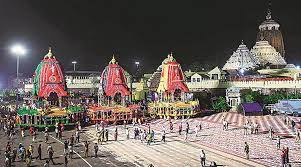
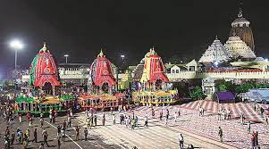

Tour duration- 6 nights and 7 days
DATES - From 21ST October to 27th october,2021
Your journey date will be told as per your booking address
| Visiting Place | Description | DATE |
|---|---|---|
 Shree Jagannath Temple |
Believed to be the divine abode of Lord Vishnu, Lord Balaram and Goddess Subhadra, this legendary 12th century edifice is the primary tourist attraction in Puri. Tips:Photography is prohibited inside the temple complex.Since you need to climb a flight of stairs to reach the primary temple chambers, be careful while travelling with senior citizens |
21ST OCTOBER,2021 |
 KONARK |
About an hour away from Puri, Konark is famous for the iconic Sun Temple. It is a UNESCO World Heritage Site, and is maintained by the Archaeological Survey of India. TIPS:Follow all the rules and regulations while exploring the site and the museum to avoid hassles. |
22ND OCTOBER,2021 |
 CHILKA LAKE |
Chilka Lake is the biggest saltwater tidal pond in Asia located 100 km from Puri. The lake stretches from Bhusandpur in North of Puri to Rambha-Malud in the Ganjan region in the south. It is the home to some of the lovely islands called Honeymoon, Somolo and Nalabana. One can also witness a wide range of migratory birds here. Just about 160 unique types of birds can be found here between November and February. Off the Satpada Island, dolphins can likewise be spotted. Over the years, the Chilka Lake has also become a popular tourist destination in Puri. | 23RD OCTOBER,2021 |
 Raghurajpur Craft Village |
This is 11 km from Puri and known worldwide for Pattachitra paintings. The yearly Basant Festival is also held here. Raghurajpur is Odisha”s first heritage craft village that came into existence in 2000. This place is known for expert Pattachitra painters and Gotipua dance troupes. In this village, artisans make sheer poetry on treated cloth, dry palm leaf and paper. This is an oldest form of art of Odisha. The main village also offers beautiful view highlighting coconut, palm, mango and jack fruit trees and mural paintings. Other things this village is known for are Tussar paintings, engravings on palm leaf, stone and wood carved items, wood, cow dung and papier mache items. | 24TH OCTOBER,2021 |
 Sakshigopal Temple |
Sakshigopal Temple formally known as Satyabadi Gopinatha Temple is a medieval temple dedicated to Lord Gopinatha located in the town of Sakhigopal on the Puri Bhubaneshwar highway in Odisha, India. The temple is built in the Kalinga Architecture style. | 25TH OCTOBER,2021 |
| Back to home |
| Go to contents |
| About us |
| Back to Varanasi |
| Next- Vizag |
| Kashmir |
| Hyderabad |
| Booking For Tour |
| Contact us |